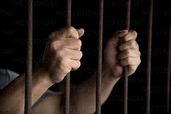

অক্টোবর 2017 সাল,
আমার ভার্সিটির সেমিস্টার ফাইনাল পরীক্ষা চলছে।
এর মাত্র দুই মাস আগে পুত্র সন্তানের জনক হয়েছি।
স্বাভাবিকভাবে জীবনের একটি স্মরণীয় সময় কাটাচ্ছিলাম।
এর মাঝে মাঝে বাবার ব্যাবসায় সন্ধ্যার পর থেকে সময় দিতাম।
কিন্তু এর মাঝে অজ্ঞাত রহস্যময় কারণে আমার চারপাশের পরিবেশ একটু ভিন্ন রকম মনে হচ্ছিল।কেউ যেন নজর রাখছে আমার উপরে!
একটু উৎকণ্ঠা অস্বস্থি অনুভব করছিলাম কয়েকদিন থেকেই এই কারণে।
মঙ্গলবার,17 অক্টোবর রাত প্রায় সাড়ে 11 টার সময় ঢাকার মিরপুর ১ নম্বর থেকে থেকে লেগুনায় করে বাসায় ফিরছিলাম।
মহল্লার গলির মুখে মিরপুর বড়বাজার বেড়িবাঁধ এলাকায় নামি।
নেমে অন্ধকার রাস্তায় দাঁড় করানো অবস্থায় কালো গ্লাসের সাদা হাইচ গাড়ি এবং 8 থেকে 10 জন লোক বিভিন্ন পজিশনে দাড়িয়ে থাকতে দেখি।এরই মধ্যে দুইজন লম্বা অ্যাথলেটিক বডির লোক একজন মাঝ বয়সী লোকের সাথে নিয়ে আমার দিকে একটু এগিয়ে এসে আমার নাম ধরে ডাকে!
আমি এগিয়ে যেতেই ঘিরে ধরে বন্ধুসুলভ কাধে হাত রেখে আবার আমার নাম পিতার নাম জিজ্ঞেস করে হেঁটে হেঁটে আগে থেকে দাড় করিয়ে রাখা গাড়ির দরজার কাছে যেতেই তাদের দুইজন পিছন থেকে কোমরে , ঘাড়ে রিভারবার ঠেকিয়ে সজোরে ধাক্কা দিয়ে জোর করে গাড়িতে তুলে নেয়।তখন রাস্তায় লোকজন নেই বললেই চলে।
একজন আমার বাহু ধরার সময় পেশী শক্ত দেখে বলছিল, স্যার জীম করা বডি!!
গাড়িতে তুলে দ্রুত চোখে একটি কালো কাপড় দিয়ে বেঁধে ফেলে এবং সাথে সাথে হাতে শক্ত করে হ্যান্ডকাফ পরিয়ে দিয়ে গাড়ি স্টার্ট দিয়ে দ্রুত চলতে আরম্ভ করে।এই সময়ে আমাকে গালি গালাজ এবং পিছন থেকে ঘাড়ে প্রচণ্ড আঘাত করে একজন।কোন প্রকার আওয়াজ না করার জন্য মাথায় পিস্তল ঠেকিয়ে ভয় দেখায় ।গাড়ি চলার পর হেড ডাউন করে আরো একটি কালো যমটুপি পরিয়ে দেয়।পিছন থেকে নল ঠেকিয়ে রাখা হয় অনেকক্ষণ।
ততক্ষণে আমি উদ্বেগ উৎকন্ঠায় দুরুদ পাঠ করছিলাম।
নিঃশ্বাস নিতে কষ্ট হচ্ছিল,আমি কাপড় আলগা করে দিতে অনুরোধ করলে ধমক শুনি।একজন এসে কিছুটা নাকের উপরে কাপড় তুলে দেয় যাতে দম নিতে কষ্ট না হয়।
এর আগে গাড়িতে বসা একজন মোবাইলে অপর প্রান্তের একজনকে কনফার্ম করে বলছিল যে "মেহমান" নিয়ে তারা সফলভাবে রওনা দিয়েছে।
তাদের কথায় বুঝা গেল এরা আগেও হয়ত এটেম্প নিয়েছিল আমাকে তুলে নিয়ে যেতে।
গাড়িতে উদ্বেগ আর উৎকণ্ঠা নিয়ে মনে মনে পরিবারের কথা,মাত্র দুই মাস বয়সী ছেলেটার কথা মনে পড়ছিল।
গাড়ি কোথায় যাচ্ছে সেটা বুঝার চেষ্টা করছিলাম।কিন্তু কিছু অনুমান করতে পারছিলাম না।তবে এটা বুঝতে পারলাম যে গাড়ি কিছুক্ষণ পর পর দিক পরিবর্তন করছিল ।পথে কয়েক জায়গায় গাড়ি ট্র্যাফিক জ্যামে পড়ে তখন আমাকে এমন ভাবে সিটে বসিয়ে দেওয়া হচ্ছিল যে আমার হাঁটু গাড়ির ফ্লোরে প্রেশার দিচ্ছিল।এমন করার কারণ বাইরে থেকে যেন কোনোভাবেই কেউ দেখতে বা জানতে না পারে ।
আনুমানিক ঘণ্টা দেড়েক পর গাড়ি এসে থামে।এখানে তেমন কোন শব্দ আসছিল না অন্য কোন গাড়ির বা রাস্তার যে শব্দ থাকে এখানে সেরকম কিছু ছিল না।আমি বুঝলাম তারা আমাকে তাদের ডেরায় নিয়ে এসেছে।
পুরো রাস্তায় আমি অবাক করা বিষয় হলো আমি ঘুমিয়ে ঘুমিয়ে আসি। মাঝে মাঝে ঘুম ভেঙ্গে যেত,আবার ঘুমিয়ে পড়তাম গাড়ির ফ্লোরে উপড় থাকা অবস্থায়..
সেখানে কিছুক্ষণ থাকার পর গাড়িতে দুই তিনজন ছাড়া বাকিরা কোথায় যেন যায়।তারা ফিরে আসার পর মিনিট দশেক পর অন্য আরেকটি জায়গায় এসে থামে।এবার আমাকে গাড়ি থেকে নামিয়ে দুইজন দুইপাশ থেকে ধরে দ্রুত হাটিয়ে একটি গেইট পেরিয়ে ভিতরে নিয়ে যায়।আমি আশেপাশের শব্দ এবার শুনার চেষ্টা করছিলাম। বিমান উঠা নামার একটা আওয়াজ ছাড়া তেমন কোন শব্দ আসছিল না।
ভিতরে কয়েকটা সিড়ি বেয়ে দুই বা তিনতলায় হবে আনুমানিক এমন একটি বিল্ডিংয়ে আমাকে নিয়ে যাওয়া হয়।এই সময়ে আমার পাশে থাকা দুইজনের পায়ের দিকটা আবছা আবছা কালো কাপড় একটু আলগা থেকে দেখা যাচ্ছিল। তাদের দুইজনের পরিধেয় প্যান্ট একই,কালো রংয়ের।
আমাকে একটি করিডোরের নিয়ে যাওয়া হয় সেখানে বড় বড় টেবিল ফ্যান চলার যেই আবহ এবং শব্দ পাচ্ছিলাম।
এরপরে আমাকে একটি লোহার সেলে ঢুকিয়ে উল্টোদিকে মুখ করে বসিয়ে দেওয়া হয়।বসিয়ে চোখ না খুলার এবং পিছনে ঘাড় ফিরাতে শক্ত ভাষায় নিষেধ এবং ভয় দেখানো হয়।
সেই সেলের আশেপাশে আরও কিছু সেল আছে সেটা অনুমান করতে সক্ষম হই আশেপাশের সেল থেকে ভেসে আসা ক্ষীণ বিভিন্ন আওয়াজে,চিৎকারে।
হটাৎ ফ্যান কিছুক্ষণের জন্য বন্ধ হয়ে আবার চলতে আরম্ভ করার মাঝে সেইসব শব্ধ স্পষ্ট শুনতে পাওয়া যাচ্ছিল।
কিছুক্ষণ পর একজন এসে বাসি পাউরুটি এবং অর্ধ পাকা কলা আর একটা সিদ্ধ ডিম খেতে দেয়।প্রচণ্ড ক্ষুধার্ত এবং ক্লান্ত হওয়ায় সেইগুলো খেয়ে নিই।আমি বুঝতে পারছি একটুপর আমার উপর দিয়ে ধকল যাবে..সেই ধকল সামলাতে পেটে খাবার প্রয়োজন।নইলে এইগুলো খাওয়ার ইচ্ছে ছিল না।
এরপর অন্য আরেকজন এসে কাকে যেন জিজ্ঞেস করে আমাকে কি খেতে দিয়েছে..কলা রুটির কথা শুনে ঐ লোক কিছুটা অসন্তুষ্ট প্রকাশে কি যেন একটা বলে..
মেনুতে সম্ভবত এরচে ভালো খাবার বরাদ্দ ছিল ..।
এরপর প্রায় ঘন্টা খানেক পর আমাকে অন্য একটি কক্ষে নিয়ে একটি উঁচু কাঠের চেয়ারে বসানো হয়।এরআগে আমার হ্যান্ডকাফ আরো শক্ত করে চেপে দেওয়া হয় এতে আমার হাতের অনুভূতি কমতে আরম্ভ করে।সেই কক্ষে নিয়ে যমচুপি খুলে শুধু কালো কাপড় রেখে আরো শক্ত করে বেঁধে দেওয়া হয়।শক্ত করে বাঁধার সময় আমার চোখের পাতার উপরে টিস্যু পেপার ভাঁজ করে দিয়ে দেওয়া হয় যাতে আবছা আলোয় কিছুই দেখার সুযোগ না থাকে।
চেয়ারে বসিয়ে দুই হাতের কনুই পর্যন্ত আরো শক্ত করে বাঁধা হয়, গোড়ালির কাছে এবং হাঁটুর নিচে চেয়ারের সাথে বাঁধা হয়।
একই ভাবে মাথা বাঁধা হয়।
এরপর শুরু হয় নানা জিজ্ঞাসাবাদ। ঐ সময়ের এমন কোন জাতীয় বা আন্তর্জাতিক বিষয় বাদ ছিল না যা আমাকে জিজ্ঞাসা করা হয়নি।দেশের বিভিন্ন ঘটনা বিশেষত হলি আর্টিজন এর সাথে আমার সংশ্লিষ্টতা রয়েছে এমন অভিযোগে আমাকে জেরা করা হয়।
এইসব জিজ্ঞাসাবাদের সময়ে প্রচণ্ড টর্চার করছিল। হাত ও পায়ের জয়েন্ট গুলো অসার হয়ে যায়।টর্চারের এক পর্যায়ে আমাকে গায়ের জামা খুলে কপিকলের সাথে বেধে ঝুলিয়ে রাখা হয়,ঝুলানো অবস্থায় ইলেকট্রিক শক দেওয়া হচ্ছিল প্রচন্ড।নির্যাতনের মাত্রা সহ্যের সীমা ছাড়িয়ে যাচ্ছিল।
মনে হচ্ছিল আমার হ্যান্ডকাফের চাপে হাতের রগ কেটে রক্ত গড়িয়ে পড়ছে..
তখন পর্যন্ত আমি জানি না কেন আমাকে এখানে নিয়ে আসা হয়েছে।
এইভাবে প্রায় ভোর রাত পর্যন্ত চলছিল একজনের পর একজন এসে জিজ্ঞাসাবাদ চালাচ্ছিল।আমাকে সব তথ্য দেওয়ার জন্যে সুযোগ দিয়ে পরের দিন সকালে আবার একই রকম করা হব বলে তখনকার মত রেহাই দেওয়া হয়।
ঐ রুম থেকে বের হওয়ার শক্তি আমার ছিল না, পায়ে ব্যাথা, দাঁড়াতে পারছিলাম না!
দুইজনের উপর ভর দিয়ে পুনরায় সেলে নিয়ে রাখা হয়..
কিছুক্ষণ পর তাদের সাথে আরো এক ব্যাক্তি আসে এবং আমার প্রেশার মেপে দেখে।
ব্যাথার জন্যে কিছু ক্যালসিয়াম ট্যাবলেট দেওয়া হয়।
টর্চার সেলে নেওয়ার আগে নিয়মিত প্রেশার চেক করা হত।
এরপরের দিন সকালে আর আমাকে ডাকা হয় নি।যখন যোহরের আযান হচ্ছিল সেই সময়ে আমাকে ঐ সেল থেকে বের করে বিল্ডিংয়ের নিচে নামিয়ে আবার একটি গাড়িতে তোলা হয়। সেখান থেকে অজ্ঞাত স্থানে রওনা করে ।পথে ট্রেন চলার শব্দ পাই ।আগে বিমানের শব্দ এবং এখন ট্রেনের শব্দ পেয়ে অনুমান করি তখন আমি এয়ারপোর্ট থেকে আশেপাশে কোথাও আছি।
বিকেল নাগাল একটি নিরব এলাকায় গিয়ে গাড়ি থামে এবং আমাকে একই ভাবে নিচ তলায় অবস্থিত একটি সেলে নিয়ে রাখা হয়। সেল টি ছিল একটা টয়লেটের সমানপ্রায়।সেলের মধ্যেই টয়লেট ছিল ,বসলে মাথা দেখা যায়।সেদিন সন্ধ্যা রাত থেকে প্রচণ্ড বৃষ্টি হচ্ছিল।ধান ক্ষেতের বিভিন্ন পোকা মাকড় সেলে চলে আসে।আমি অনুমান করি এখন আমাকে কোন গ্রামীণ এলাকায় রাখা হয়েছে।
এখানেও আমার প্রেশার মেপে দেখে নিত প্রায় নিয়মিত।
রাতে দিনে যখন তখন এসে আমাকে টর্চার সেলে নিয়ে যাওয়া হতো আর শারীরিক ও মানসিকভাবে নির্যাতন করা হতেই থাকল..
আমাকে তারা হাই প্রোফাইল কেউ ভেবেছিল।
কিন্তু তদন্তে ও জিজ্ঞাসাবাদে কিছুই না পেয়ে আমাকে 17 অক্টোবর থেকে 2 নভেম্ভর পর্যন্ত গুম রেখে 2 অক্টোবর ময়মনসিং জেলার ত্রিশাল থানায় একটি জঙ্গি নাটক মঞ্চস্থ করে মামলা দায়ের করে কেন্দ্রীয় জেলে পাঠানো হয়। কোর্টে, থানায় এবং কারাগারে আনা নেয়ার সময় ভিআইপি মুভমেন্ট চলার মত রাস্তা খালি করে আমাকে একা একটি প্রিজন ভ্যানে রেখে,সামনে পিছনে দুই গাড়ি র্যাব টহল দিয়ে আনা নেয়া করত।
কোর্টে তোলার সময় এমন ভাবে তোলা হতো যেন আমি দেশের শীর্ষ কোন লিষ্টেড সন্ত্রাসী!
সেখান থেকে দুই দফায় ১০ দিন এবং তিন দিনের রিমান্ডে নিয়ে জোরপূর্বক 164 ধারায় জবানবন্দি দিতে বাধ্য করে।নইলে আরো মামলা বা মাইনাস করে দেওয়ার হুমকি দেওয়া হয়।আইনের বিষয়ে ধারণা না থাকায় এবং তাদের আশ্বাসে 164 দিতে বাধ্য হই।
একই মামলায় ভিন্ন ভিন্ন সময়ে উঠিয়ে আনা হয়েছে এমন আরও কয়েকজনকে যুক্ত করা হয়।অভিযোগে উল্লেখ করা হয় অভিযুক্ত ব্যাক্তিরা 2 নভেম্বর ত্রিশাল কাজী নজরুল ইসলাম বিশ্ব বিদ্যালয় এলাকায় কথিত জঙ্গি কর্মকাণ্ড পরিচালনা করার উদ্দেশ্যে নাকি সমবেত হয়েছিল!
অথচ অভিযুক্ত প্রত্যেকেই তুলে আনা হয়েছিল অনেক আগেই।